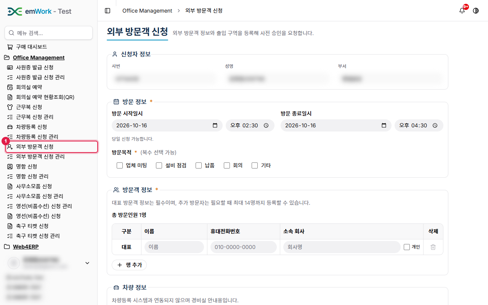
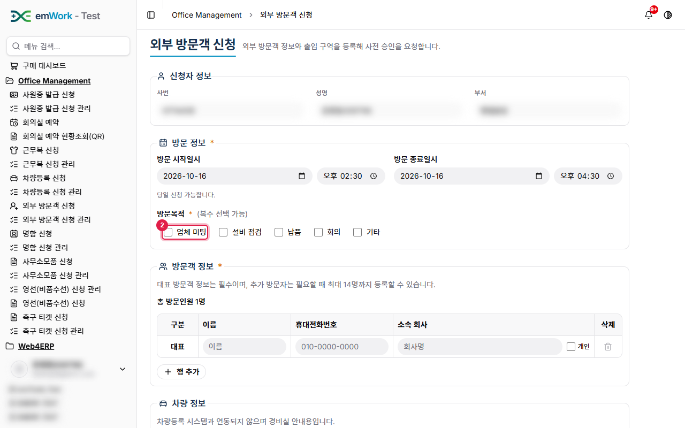
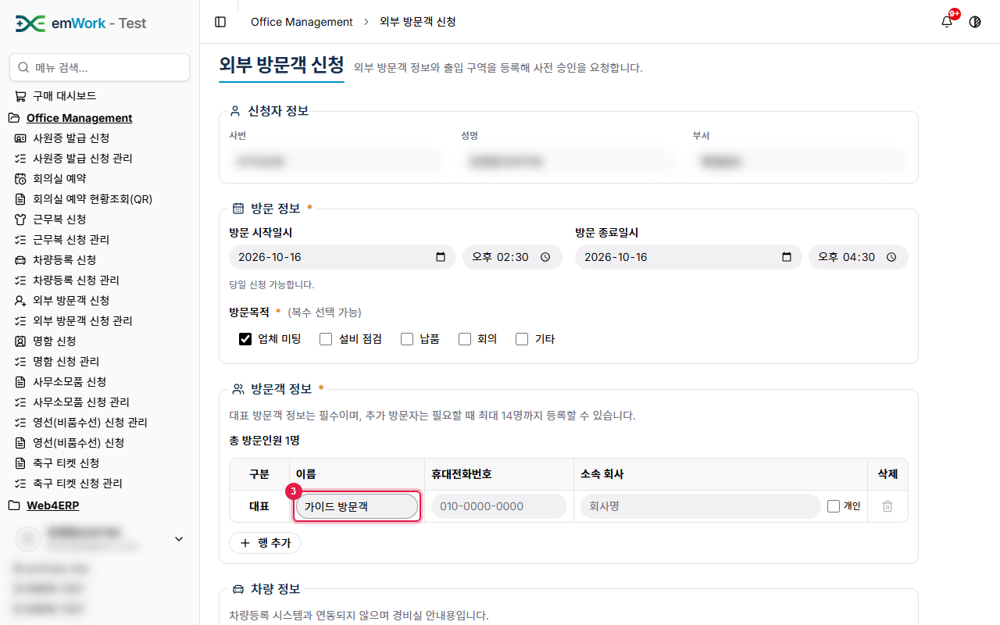
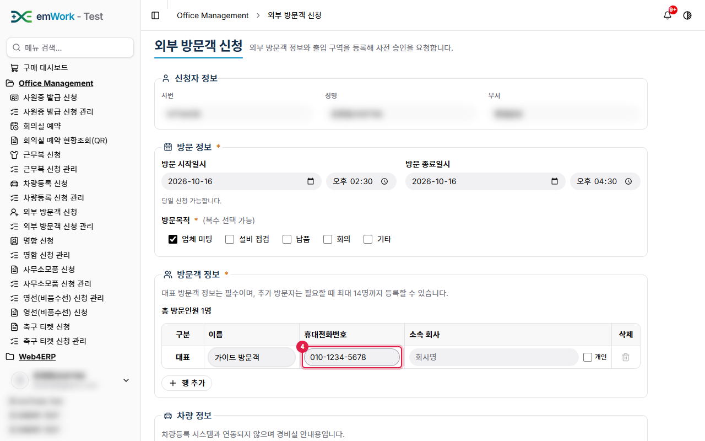
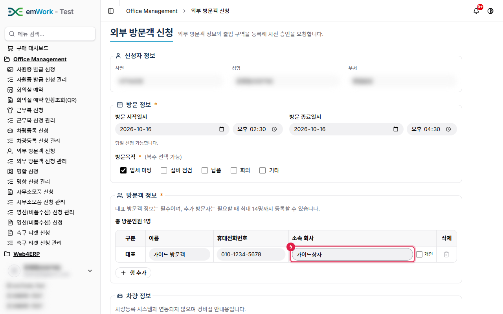
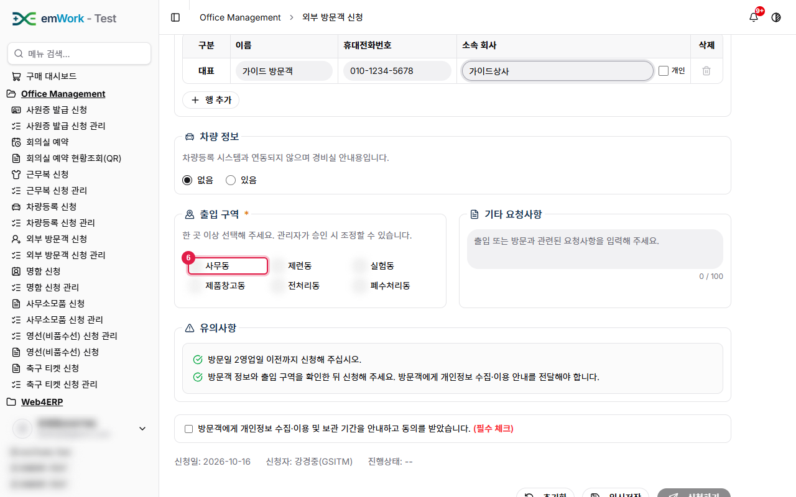
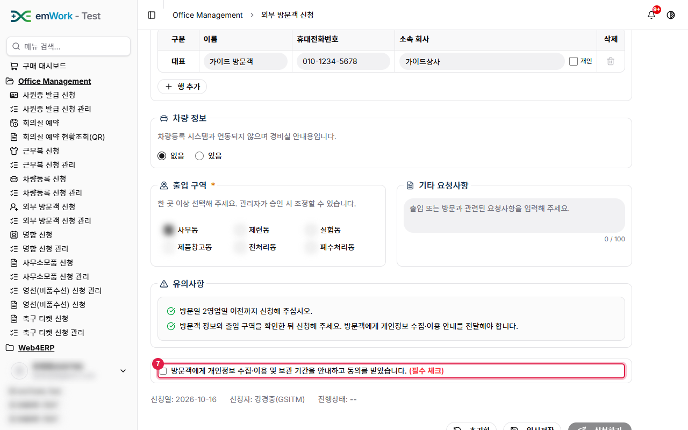
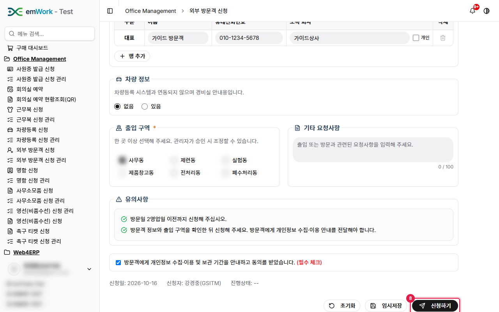
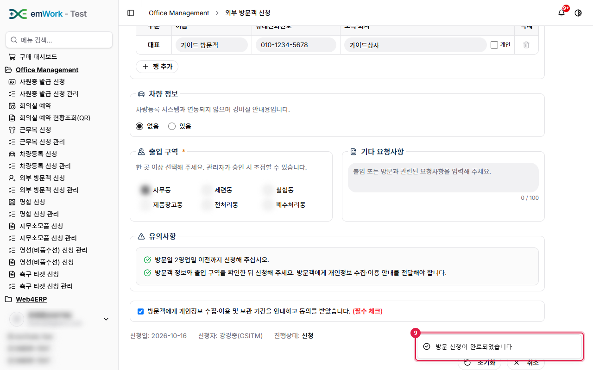

work4ERP 사용자 가이드 › Office Management
외부 방문객 신청
주요 내용
- 외부 방문객의 방문 일정과 출입 구역을 사전에 등록해 승인을 요청합니다.
주의 사항
- 대표 방문객 정보는 필수이며 추가 방문자는 최대 14명까지 등록할 수 있습니다. 당일 신청이 가능합니다.
- 방문객에게 개인정보 수집·이용 안내를 했음을 확인해야 신청됩니다. 차량 정보는 경비실 안내용입니다.
기능 요약
- 방문 일시·방문목적(복수 선택).
- 방문객 정보(이름·휴대전화·소속, 개인 여부)와 행 추가.
- 차량 유무, 출입 구역(사무동·제련동·실험동 등), 요청사항.
1
'외부 방문객 신청'을(를) 클릭합니다. 외부 방문객의 방문을 사전에 신청하는 화면입니다. 신청자 정보는 로그인한 사용자 정보가 자동으로 표시되고, 방문 일시는 오늘 기준으로 기본 입력됩니다.

2
방문목적을 선택합니다(복수 선택 가능).

3
대표 방문객 이름을 입력합니다. 방문자가 여러 명이면 '행 추가'로 최대 14명까지 추가합니다.

4
방문객 휴대전화번호를 입력합니다.

5
소속 회사를 입력합니다.

6
출입할 구역을 선택합니다. 차량 정보는 경비실 안내용입니다.

7
방문객에게 개인정보 수집·이용 안내를 했음을 확인하고 체크합니다. 필수 항목입니다.

8
모든 항목을 입력했으면 '신청하기' 버튼을 클릭해 신청합니다.

9
신청이 완료되면 완료 메시지(토스트)가 표시되고 신청 이력에 추가됩니다.
